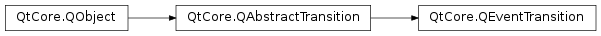

QEventTransition¶
Inherited by: QMouseEventTransition, QKeyEventTransition
Note
This class was introduced in Qt 4.6.
Synopsis¶
Functions¶
- def
eventSource() - def
eventType() - def
setEventSource(object) - def
setEventType(type)
Detailed Description¶
The
PySide2.QtCore.QEventTransitionclass provides aPySide2.QtCore.QObject-specific transition for Qt events.A
PySide2.QtCore.QEventTransitionobject binds an event to a particularPySide2.QtCore.QObject.PySide2.QtCore.QEventTransitionis part of The State Machine Framework .Example:
QPushButton *button = ...; QState *s1 = ...; QState *s2 = ...; // If in s1 and the button receives an Enter event, transition to s2 QEventTransition *enterTransition = new QEventTransition(button, QEvent::Enter); enterTransition->setTargetState(s2); s1->addTransition(enterTransition); // If in s2 and the button receives an Exit event, transition back to s1 QEventTransition *leaveTransition = new QEventTransition(button, QEvent::Leave); leaveTransition->setTargetState(s1); s2->addTransition(leaveTransition);
Subclassing¶
When reimplementing the
PySide2.QtCore.QEventTransition.eventTest()function, you should first call the base implementation to verify that the event is aQStateMachine.WrappedEventfor the proper object and event type. You may then cast the event to aQStateMachine.WrappedEventand get the original event by callingQStateMachine.WrappedEvent.event(), and perform additional checks on that object.See also
-
class
PySide2.QtCore.QEventTransition(object, type[, sourceState=nullptr])¶ -
class
PySide2.QtCore.QEventTransition([sourceState=nullptr]) Parameters: - sourceState –
PySide2.QtCore.QState - object –
PySide2.QtCore.QObject - type –
PySide2.QtCore.QEvent.Type
Constructs a new
PySide2.QtCore.QEventTransitionobject associated with events of the giventypefor the givenobject, and with the givensourceState.Constructs a new
PySide2.QtCore.QEventTransitionobject with the givensourceState.- sourceState –
-
PySide2.QtCore.QEventTransition.eventSource()¶ Return type: PySide2.QtCore.QObjectReturns the event source associated with this event transition.
-
PySide2.QtCore.QEventTransition.eventType()¶ Return type: PySide2.QtCore.QEvent.TypeReturns the event type that this event transition is associated with.
-
PySide2.QtCore.QEventTransition.setEventSource(object)¶ Parameters: object – PySide2.QtCore.QObjectSets the event source associated with this event transition to be the given
object.
-
PySide2.QtCore.QEventTransition.setEventType(type)¶ Parameters: type – PySide2.QtCore.QEvent.TypeSets the event
typethat this event transition is associated with.
© 2018 The Qt Company Ltd. Documentation contributions included herein are the copyrights of their respective owners. The documentation provided herein is licensed under the terms of the GNU Free Documentation License version 1.3 as published by the Free Software Foundation. Qt and respective logos are trademarks of The Qt Company Ltd. in Finland and/or other countries worldwide. All other trademarks are property of their respective owners.